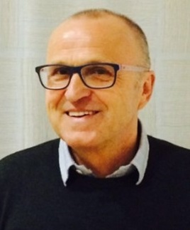
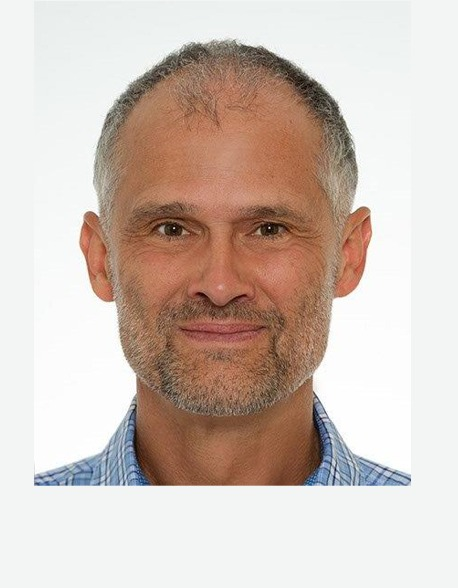
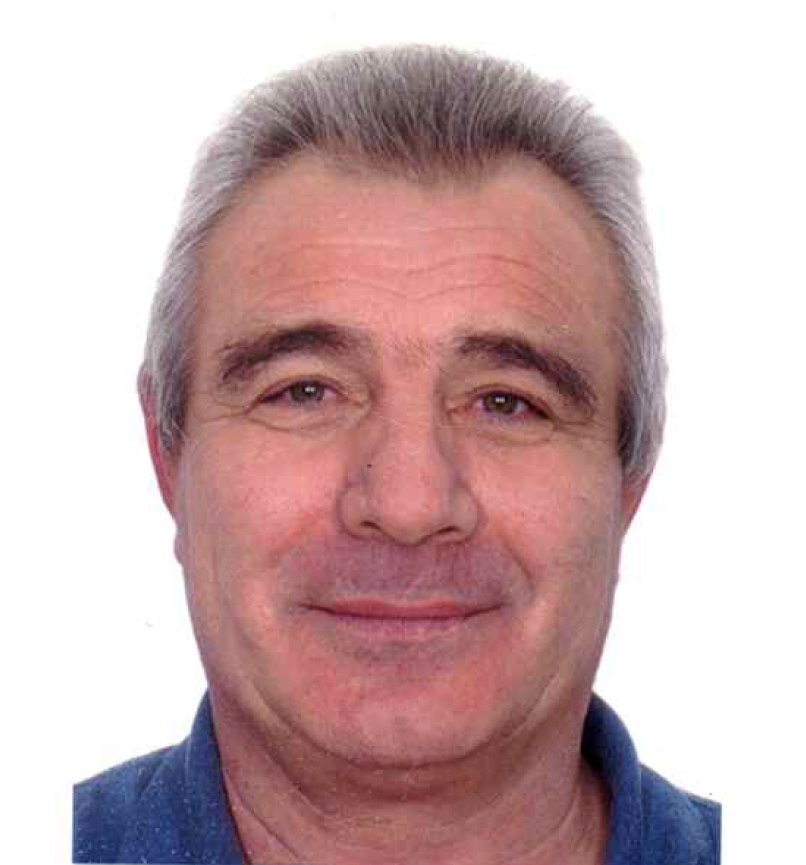

TC Baindt
Tennisclub Baindt e.V.
Startseite
Termine
Club-Infos
Kontakt und Anfahrt
Mitgliedschaft
Mannschaften
Vorstandschaft
Saison 2025
Jubiläum 40 Jahre TC
Archiv
Impressum
Vorstandsteam und Platzwart
Vorstandschaft
Sibylle Boenke
1. Vorsitzende
Tel. 07502 1740
1.vorsitzende@tc-baindt.de
Dr. Sascha Wösle
2. Vorsitzender
Tel. +49 152 05454556
2.vorsitzender@tc-baindt.de

Leonard Reich
Kassier
Tel. 07524 2061
kassier@tc-baindt.de

Wolfgang v. Bank
Sportwart
Mobil: +49 170 1904096
sportwart@tc-baindt.de
Philipp Neubauer
Jugendwart
Mobil: +49 156 78561583
jugendwart@tc-baindt.de
Inge Fink-Spöri
Schriftführerin
Tel. 07502 2507
schriftfuehrerin@tc-baindt.de
Karlheinz Blank
Techn. Leiter
Tel. +49 152 01626764
techn.leiter@tc-baindt.de
Harald Wetzel
Techn. Leiter
Tel. +49 157 78360120
techn.leiter@tc-baindt.de
Marion Grabherr
Organisatorin Bewirtung
Tel. 07502 913891
bewirtung@tc-baindt.de
Rafael Grabherr
Organisator Bewirtung
Tel. 07502 913891
bewirtung@tc-baindt.de
Barbara Blattner
Breitensportwartin
Mobil: +49 151 56335563
breitensportwartin@tc-baindt.de

Waldemar Schneider
Platzwart
Mobil: +49 176 38331399